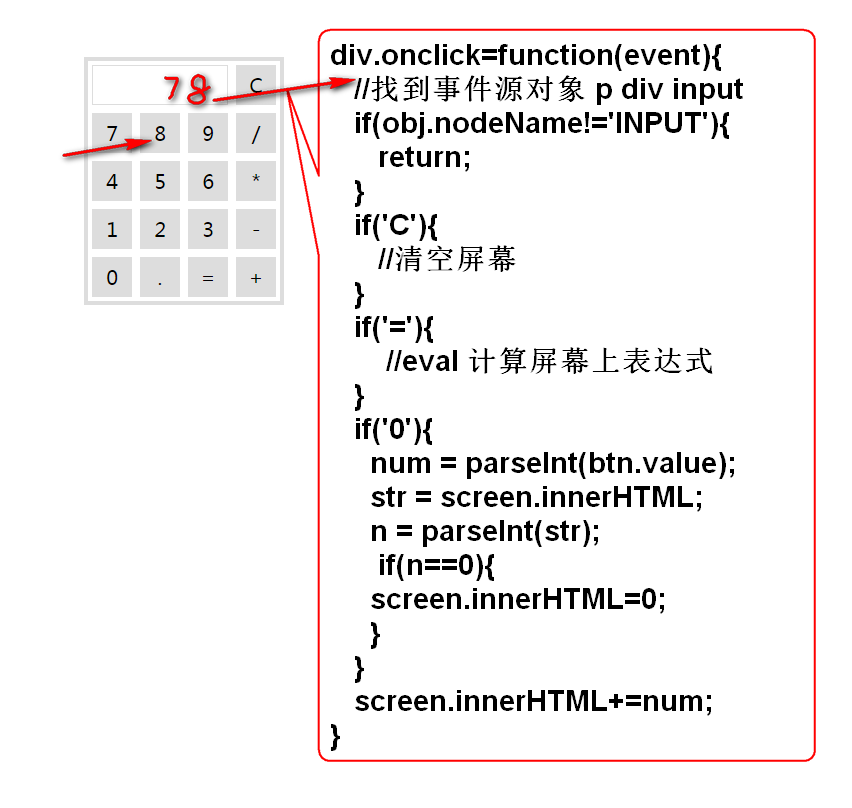

事件编程,是指为特定的动作指派程序的编程方式. 这些特定动作包括: 鼠标点击, 鼠标移动,鼠标进入,鼠标离开, 键盘按下, 获得键盘焦点, 失去键盘焦点, 表单提交之前等
事件发生时, 浏览器会将发生事件的情况数据封装到event对象中. 如果需要获取事件相关的事件, 则需要调用此对象的属性或方法.
HTML 中可以利用属性绑定JS事件:
<input type="button"
value="冒泡"
onclick="console.log('btn')">
也可以利用 JS 动态绑定事件:
var btn = document.getElementById('btn');
//为按钮绑定鼠标单击事件
btn.onclick = function(){
//this引用调用方法的当前对象
//this.value访问当前按钮的value属性
console.log('Hello '+ this.value);
};
如上JS脚本绑定方式必须在页面加载以后执行,才能找到按钮对象, 才能正确绑定事件.
在事件方法中返回false 可以阻止元素的默认行为, 如: 连接跳转行为, 表单提交行为等
doc.onclick=function(){
console.log('doc');
//事件方法返回 false时候,取消执行后续
//动作, 如: 取消网页跳转, 表单提交等
return false;
};
利用 window.onload 事件, 在页面加载以后执行页面初始化代码:
完整的案例:
<!DOCTYPE html>
<html>
<head>
<meta charset="UTF-8">
<title>Insert title here</title>
<script type="text/javascript">
//绑定网页加载以后执行的事件
window.onload=init;//注意,init是方法的引用变量
function init(){
var btn = document.getElementById('btn');
//为按钮绑定鼠标单击事件
btn.onclick = function(){
//this引用调用方法的当前对象
//this.value访问当前按钮的value属性
console.log('Hello '+ this.value);
};
var doc = document.getElementById('doc');
doc.onclick=function(){
console.log('doc');
//事件方法返回 false时候,取消执行后续
//动作, 如: 取消网页跳转, 表单提交等
return false;
};
}
</script>
</head>
<body>
<h1>事件绑定</h1>
<input type="button" id="btn" value="test">
<a id="doc" href="http://doc.tedu.cn"
>DOC</a>
</body>
</html>
事件发生以后, 事件相关信息都保存到了event对象中.
如获取鼠标位置:
event.clientX
event.clientY
这里有个兼容性问题, IE浏览器的event对象是window的属性, 而Firefox中是事件方法的参数, 这样必须写出如下代码才能保证兼容性:
<!DOCTYPE html>
<html>
<head>
<meta charset="UTF-8">
<title>Insert title here</title>
<script type="text/javascript">
function func(e){
console.log(e.clientX + ',' + e.clientY);
var obj = event.target||event.srcElement;
console.log(obj);
}
window.onload=function(){
var div=document.getElementById('demo');
div.onclick=function(event){
console.log(event.clientX + ',' +
event.clientY);
var obj = event.target||event.srcElement;
console.log(obj);
};
};
</script>
</head>
<body>
<h1>event 对象</h1>
<div onclick="func(event);">Hello !</div>
<div id="demo">Demo Div!</div>
</body>
</html>
DOM 中在内层元素发生事件时候,会逐层向外部传播, 称为事件冒泡传播:
<div onclick="console.log('div')">
div 元素
<p onclick="console.log('p')">
p元素
<input type="button"
value="冒泡"
onclick="console.log('btn')">
</p>
</div>
利用事件冒泡, 在外部检查事件, 可以监听一组元素是否发生了相应的事件.
在事件方法中可以阻止事件的传播, 控制事件的传播范围:
<script type="text/javascript">
function test(e){
console.log('test()');
//阻止事件的继续传播
if(e.stopPropagation){
e.stopPropagation();
}else{
e.cancelBubble=true;
}
}
</script>
<div onclick="console.log('div')">
div 元素
<p onclick="test(event)">
p元素
<input type="button"
value="冒泡"
onclick="console.log('btn')">
</p>
</div>
分析: 
代码:
<!DOCTYPE html>
<html>
<head>
<title>计算器</title>
<meta charset="utf-8" />
<style type="text/css">
.panel {
border: 4px solid #ddd;
width: 192px;
margin: 100px auto;
/*border-radius: 6px;*/
}
.panel p, .panel input {
font-family: "微软雅黑";
font-size: 20px;
margin: 4px;
float: left;
/*border-radius: 4px;*/
}
.panel p {
width: 122px;
height: 26px;
border: 1px solid #ddd;
padding: 6px;
overflow: hidden;
}
.panel input {
width: 40px;
height: 40px;
border:1px solid #ddd;
}
</style>
<script type="text/javascript">
function $(id){
return document.getElementById(id);
}
window.onload=function(){
var panel = $('panel');
//console.log(panel);
panel.onclick=clickAction;
};
function clickAction(event){
//console.log(event);
//获取事件源
var obj=event.target||event.srcElement;
//console.log(obj);
if(obj.nodeName!='INPUT'){
return ;
}
//console.log(obj);
//取得 按钮 上的文字
var str = obj.value;
console.log(str);
var screen = $('screen');
console.log(screen);
//处理每个按钮
if(str=='C'){
screen.innerHTML=0;
return;
}
if(str=='='){
try{
var val =
eval('('+screen.innerHTML+')');
screen.innerHTML=val;
}catch(e){
screen.innerHTML='E';
}
return;
}
if(str=='0'){
var num=parseFloat(screen.innerHTML);
if(num==0){
screen.innerHTML=0;
return;
}
}
if(screen.innerHTML=='0'){
screen.innerHTML="";
}
screen.innerHTML+=str;//0 - 9 +-*/.
}
</script>
</head>
<body>
<div id="panel" class="panel">
<div>
<p id="screen"></p>
<input type="button" value="C">
<div style="clear:both"></div>
</div>
<div>
<input type="button" value="7">
<input type="button" value="8">
<input type="button" value="9">
<input type="button" value="/">
<input type="button" value="4">
<input type="button" value="5">
<input type="button" value="6">
<input type="button" value="*">
<input type="button" value="1">
<input type="button" value="2">
<input type="button" value="3">
<input type="button" value="-">
<input type="button" value="0">
<input type="button" value=".">
<input type="button" value="=">
<input type="button" value="+">
<div style="clear:both"></div>
</div>
</div>
</body>
</html>